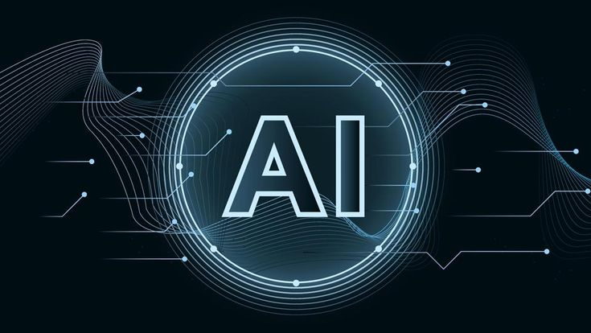

Artificial Intelligence: Beyond Sci-Fi, Into Your Reality

Remember those movies where machines became self-aware and took over the world? Well, Artificial Intelligence (AI) is real, but it's not quite there yet. AI is a branch of computer science focused on creating intelligent machines that can mimic human capabilities. Think learning, problem-solving, and even interacting with us naturally.
Unleashing the Power of AI
-
Learning Machines: AI systems can analyze data and constantly improve. This lets them recognize patterns, predict future events, and solve problems in groundbreaking ways.
-
Smarter Decisions: AI can analyze complex situations and make choices based on available information. This is used in self-driving cars, fraud detection, and even medical diagnosis.
-
Natural Conversations: AI can understand and respond to human language. This allows for natural interaction through chatbots, virtual assistants, and more.
-
Machine Visionaries: AI can interpret and understand visual data. This has applications in facial recognition, image classification, and object detection.
Where is AI Making a Difference?
-
Healthcare Revolution: AI is used to diagnose diseases, create personalized treatment plans, and even perform surgery with incredible precision.
-
Financial Finesse: AI helps detect fraud, personalize investment recommendations, and automate financial tasks, making finance more streamlined.
-
The Future of Transportation: AI is paving the way for self-driving cars, smarter traffic management, and optimized logistics.
-
Manufacturing Marvels: AI automates tasks, improves efficiency, and predicts equipment failures in manufacturing, keeping things running smoothly.
-
Enhanced Customer Service: AI powers chatbots and virtual assistants, providing 24/7 customer support.
The AI Frontier: What Lies Ahead?
The future of AI is brimming with possibilities. Some experts believe AI will surpass human intelligence, leading to a new era of innovation. However, there are also concerns about potential risks, like job displacement and the misuse of AI for malicious purposes. As AI continues to evolve, it's important to develop it responsibly and ethically.
Explore the World of AI